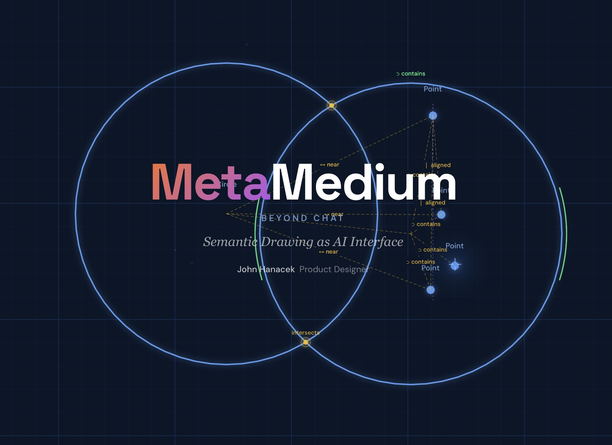
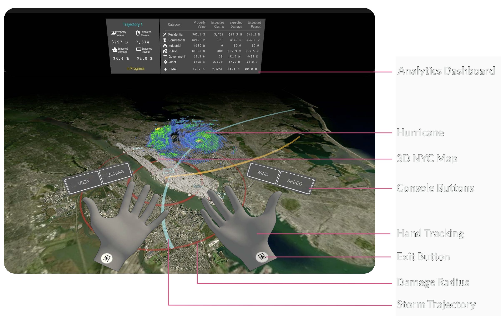

Overview
Designing human-augmenting experiences specializing in creative tools, scientific tools & data exploration using AI & spatial computing.
Expertise
Product Design · XR/VR Interface Design · User Experience · Design Systems · AI-Powered Tools · Data Visualization · Workshop Facilitation
Tools
Claude Code · OpenCode · LMStudio · Ollama · Hermes · Figma · Adobe Suite · Blender · three.js · Unity · ShapesXR · Obsidian · Coda
Current Work
JHDesign LLC Client Work
Design services for founding teams, continuing companies, and individuals.
OpenProse: Founding Design Case Study Interactive
Research & Development
Self-directed work on how people and agents think together.
MetaMedium: AI Beyond Chat

A framework for diagrammatic human-AI communication. Exploring how drawing and spatial thinking can augment our interaction with AI systems.
On Agent Orchestration
My approach to agentic orchestration.
Past Work
Nanome: Lead XR Product Designer2022-2024
Led the complete redesign of Nanome's molecular visualization platform for VR and Mixed Reality. Worked closely with scientists and researchers to create intuitive spatial interfaces for drug discovery.
Nanome 2: XR Product Design Case Study Interactive
BadVR: Immersive UI/UX Design 2021 - 2022
AR HUD sensor data visualization systems prototypes and handoff assets.


AvatarMEDIC 2019–2021
Founded and led product concept, brand and multimedia design focusing on telepresence enabling remote medical training and robotic surgery collaboration. Founder Institute SF 2020 graduate as CEO.
HoloTRIAGE Demo
XR medical triage training system.
HoloLens 2 · 2020AvatarMEDIC Clinic
XR telepresence platform concept.
Concept · 2020A1R: Augmented First Responder
AR HUD for first responders. NIST CHARIoT Phase 2 Winner.
Magic Leap · 2021Awards
R&D Innovation Award 2022
Aerospace Medical Association (AsMA) — Programming robot arm via XR digital twin
"Most Meta" Award 2016
Awarded "Black Box" trophy by Georgetown CCT peers
Education
Founder Institute Graduate 2020
San Francisco cohort as CEO of AvatarMEDIC
MA Communication, Culture & Technology 2014-2016
- Thesis "As We May Sketch" — AI-enabled drawing for education, now MetaMedium
- Published "Capturing, Tracing and Visualizing the Spread of Technology-Enhanced Instructional Strategies" at EduLearn 2015
Interviews, Data Coding, Social Network Research & Analysis
BA Political Science, Minor Neuroscience 2008 - 2012
UC San Diego
- Thesis "Can Modern War Be Just?" — Drone/RPA usage in warfare
What People Say
"It was a tremendous pleasure and honor to work on the Nanome 2 Redesign with John. He's not only a true Visionary, but also an amazing listener with incredible intuition. I've never seen anyone able to so readily understand scientists, easily communicate with them, then design an experience they can scarcely imagine, but recognize as what they wanted (even Needed) as soon as they step into it."
Sheila Zipfel, Nanome Product Manager, Medicinal Chemist"John recently led a customer journey mapping workshop for my team, and it was an outstanding experience from start to finish. My team and I came away with a deeper understanding of our customers and a clear appreciation for the impact of product design from the very start of a project."
Tommy Kronmark, COO Muse.bio"I've never known someone who practices design thinking as well as John."
Ben Reed, Illustrator and Designer"John's ability to stay ahead of rapid industry shifts is evident not only in his consulting work but also in his thought leadership. I highly recommend John for roles requiring design leadership, systems thinking, and future-focused innovation."
Dr. Hurriyet Ok, Professor George Washington University"John is an extraordinary person, a brilliant leader, possessing multidisciplinary skills, and a deep knowledge into his craft and profession. He will always strive to give his best and to achieve the mission and objectives no matter how challenging the obstacles."
Dr. Susan Jewell, Co-founder AvatarMEDIC"Thank you to all the industry leaders who are making waves in the spatial computing era for contributing their time to offer their wisdom on entering the industry."
Spatial Design: Breaking the 2D Paradigm, Featured Expert xrealitypro.comServices & Consulting
Available for founding designer engagements, design engineering, AI product design, and XR prototyping. I ship 0→1 products through design thinking and hands-on technical implementation.
Contact: hi@johnhanacek.com
Explore More
About & Experience
Full bio, work history, education, and areas of expertise.
Art & Creative
Mixing media and nature.
External
Personal Blog Tech, Strategy & Research
Fractal Future Original Science Fiction
Spatial & Immersive Design VR, AR, XR
MetaMedium AI beyond chat
Earth Star Technology for planetary thriving